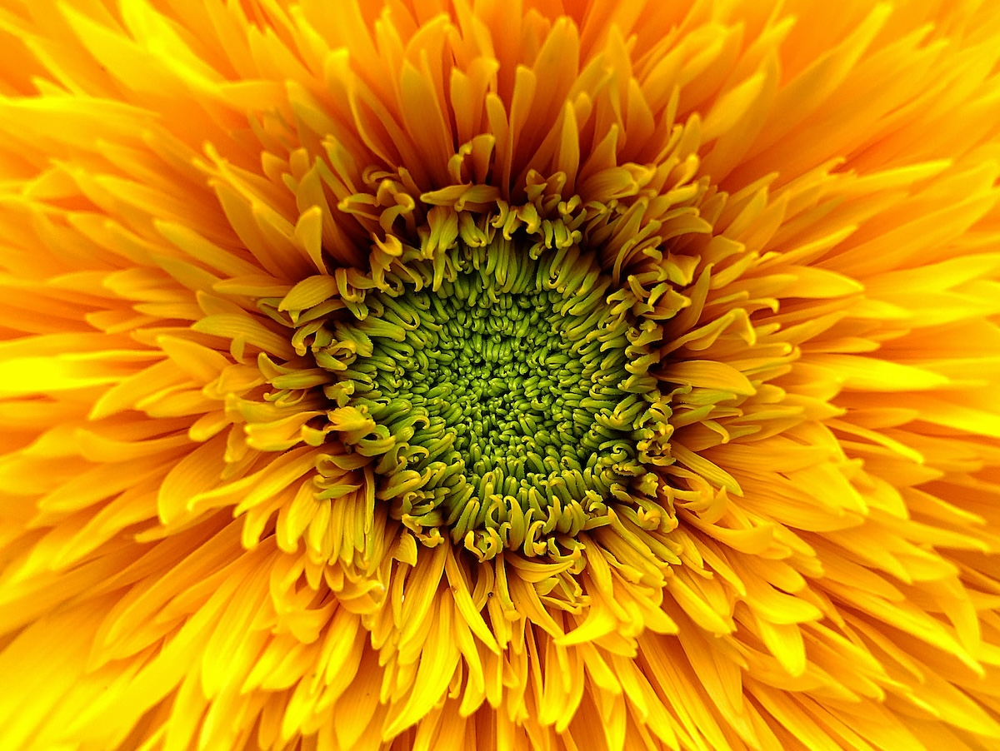

Fotoğrafta Sarı Renk: Canlılığın ve Enerjinin Temsilcisi
Renkler, bir fotoğrafın duygusal etkisini ve kompozisyonunu şekillendiren en önemli unsurlardan biridir. Her renk, izleyiciye farklı bir mesaj iletir; bazıları huzur verirken bazıları enerji ve hareket katar. Sarı renk, fotoğrafçılıkta canlılık, neşe, enerji ve sıcaklığın en güçlü temsilcilerinden biridir. Doğru kullanıldığında izleyicinin ilgisini anında çeker ve görüntüye derinlik katar. Gelin, sarı rengi fotoğrafçılıkta nasıl etkili bir şekilde kullanabileceğimize yakından bakalım.
Sarının Psikolojik Etkileri
Sarı renk, insan psikolojisi üzerinde güçlü etkiler yaratır. Güneşin rengi olması nedeniyle, sıcaklık ve mutluluk hissi uyandırır. Aynı zamanda dikkat çekici bir renk olması sebebiyle, sarı unsurlar bir fotoğrafta doğal olarak gözün ilk fark ettiği detaylardır. Bu nedenle fotoğraflarda sarı, bir odak noktası yaratmak için ideal bir renktir.
Doğada Sarı
Doğal dünyada sarı renk çok yaygındır; özellikle ilkbahar ve yaz aylarında doğanın bize sunduğu bir renk paletinin en önemli parçasıdır. Çiçekler, yapraklar, meyveler ve hatta güneş ışığı bile sarının farklı tonlarını sunar. Bir çiçek tarlası ya da gün batımı sırasında, sarı tonlar fotoğrafa hem derinlik hem de duygusal bir sıcaklık katar.
Doğa fotoğrafçılığında sarı renk, özellikle dikkatli bir kompozisyonla birleştiğinde, görsel bir ziyafet sunabilir. Örneğin, sarı bir çiçek tarlası ya da güneşin sarı ışıkları altında parıldayan bir su birikintisi, izleyiciye huzur ve neşe verir.
Sarının Mimari ve Sokak Fotoğrafçılığındaki Yeri
Sarı, sadece doğada değil, şehir manzaralarında da sıkça karşımıza çıkar. Özellikle sokak fotoğrafçılığında sarı detaylar, bir bina, bir araba ya da bir tabelada kullanılabilir. Sarı bir duvar ya da parlak sarı bir taksi, fotoğrafta odak noktası yaratırken, şehir yaşamına enerji katar.

Bir şehirde, sarı rengi vurgulamak istiyorsanız, bu unsurları izole ederek ya da kontrast yaratarak öne çıkarabilirsiniz. Gri binaların arasında parıldayan sarı bir detay, monotonluğa karşı hoş bir kırılma yaratır.
Sarı Rengin Kontrastı ve Denge Kullanımı
Sarı, sıcak renk ailesine ait olduğundan, genellikle fotoğraflarda soğuk renklerle (örneğin mavi ya da yeşil) güçlü bir kontrast oluşturur. Bu kontrast, görsel dengeyi sağlar ve gözün fotoğrafın belirli bölümlerine yönelmesine yardımcı olur. Sarı ve mavi kombinasyonu, özellikle manzara ve doğa fotoğrafçılığında sıkça tercih edilen bir tekniktir.

Sarıyı dengeli kullanmak önemlidir; çünkü aşırı sarı kullanımı, izleyiciyi yorabilir ve fotoğrafın anlamını kaybettirebilir. Minimal bir sarı vurgusu ise fotoğrafın bütünlüğünü bozmadan enerji katmanın harika bir yoludur.
Işık Kaynağı Olarak Sarı
Güneş ışığının sarı tonları, fotoğrafçılıkta doğal bir ışık kaynağı olarak da değerlendirilir. Altın saat olarak bilinen gün doğumu ve gün batımı arasındaki zaman diliminde, sarı ve turuncu tonlar fotoğrafa sıcak bir hava katar. Bu saatlerde çekilen fotoğraflar, yumuşak gölgeler ve sıcak renk paletleri ile etkileyici sonuçlar verir. Sarı ışığın yarattığı dramatik etkiyi kullanarak hem portrelerde hem de manzara çekimlerinde büyüleyici kareler yakalayabilirsiniz.
Sonuç
Fotoğrafta sarı renk, doğru kullanıldığında enerji ve neşe dolu kareler yaratır. Bu rengi vurgularken, kompozisyonunuzu dikkatli bir şekilde oluşturarak sarının gücünü dengelemek önemlidir. Doğada, mimaride ya da sokaklarda sarı renk, fotoğraflarınıza hayat verir ve izleyiciye sıcak bir his sunar. Sarı, tıpkı güneş gibi fotoğrafınıza ışık ve canlılık katmaya her zaman hazır.
Her fotoğrafın bir hikayesi vardır; neden bu hikayeyi sarının parlak ve neşeli tonlarıyla anlatmayasınız?